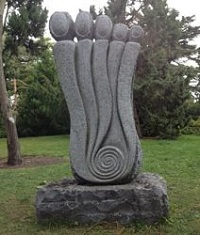

National Botanical Gardens

This is one of my favourite places in Dublin. So close to the city centre yet very peaceful.
You can stroll for an hour or more through the gardens with features like the vegetable garden,
huge glasshouses and the sensory garden. My favourite spot is sitting on the bench in among the tall grasses,
listening to them rustle in breeze. There are exhibitions there during the year, Sculpture in Context is a highlight.
This features a wide range of mediums from many artists and is Irelands largest outdoor sculpture exhibition.
National Botanical Gardens website
Sculpture in Context 2014 video
Roof Garden, Chester Beatty Library
Done with the hustle in the city? Check out this garden on top of the city,
a lovely secret in the centre of Dublin.
It is described as an oasis of peace.
Nestled in the middle of Dublin Castle, overlooking the garden,
it really does provide a bit of me Time in the city.
Chester Beatty Library website
RHA Gallery

Bright, modern, spacious building with modern Art.
It is just off Stephens Green, on quiet Ely Place, with Coppa Café incorporated.
There are talks, workshops and constantly changing exhibits.
There is always a reason to drop in to this Gallery.
RHA Gallery website
George Bernard Shaw Pub
This a mixture of social and cultural, with some amazing Street Art out in the back garden.
Evolve Urban Art run Graffiti Jams there, where at least 6 Street Artists, redecorate the walls.
There are also on going exhibitions there, with work on the walls of the interior of the pub.
This is a place to be visited at least once, check out the pizza too!
George Bernard Shaw Pub on Facebook
C by Tom McCarthy
If you are a fan of esoteric novels then you should look no further than C. Right from the beginning, it is evident that this Booker Prize nominated novel is slightly unusual. The language used is almost scientific, in many respects the opposite of romanticism. The main character Serge Carrefax often derives more pleasure from listening to and trying to interpret radio waves than interacting with other people. Stylistically , McCarthy's writing in this novel has been compared to James Joyce.
Born to the sound of one of the very earliest experimental wireless stations, Serge finds himself steeped in a weird world of transmissions, whose very air seems filled with cryptic and poetic signals of all kinds. What follows is a stunning tour de force in which the eerily idyllic settings of pre-war Europe give way to the exhilarating flight-paths of the front-line aeroplane radio operator, then the prison camps of Germany, the drug-fuelled London of the roaring twenties and, finally, the ancient tombs of Egypt.
The Twin by Gerbrand Bakker
If you are looking for an action packed thriller, this is definitely not the book for you. This is a subtle story about family ties, loneliness, grief and, ultimately, hope. It is a joy to read and it is far from being depressing and gloomy as there is humour woven into the story throughout.
Helmer and his twin brother Henk were inseparable as children, but Henk was killed when the boys were in their teens and Helmer's life changed. He had never wanted to take over the family farm, but following Henk's death he is forced to give up his studies and devote his life to farming. This was to have been Henk's role in life. As the book starts, Helmer is middle-aged and his father is old and slowly dying. Helmer moves him to an upstairs room and starts to make changes in the rest of the house. A neighbour and her small boys call in from time to time, but mostly Helmer is alone with his father, his memories and the animals. The landscape is bleak, beautiful and unforgiving. Little changes. Then quite suddenly a new Henk appears in his life and long buried memories come to the surface.
I loved the quality of the prose, and so some credit must go the translator as well as the author. I loved the descriptions of the details of Helmer's daily life and his surroundings and I particularly liked the way the story evolved. We don't get the back story in one great lump, it is revealed to us bit by bit as we move through the book. Our opinion of Helmer gradually changes as we learn more about him and his relationships with his father and brother. This is great writing and a memorable story.
One Hundred Years of Solitude by Gabriel García Márquez
Equally tragic, joyful and comical, Gabriel García Márquez's masterpiece of magical realism, One Hundred Years of Solitude is a seamless blend of fantasy and reality, translated from the Spanish by Gregory Rabassa in Penguin Modern Classics.
Gabriel García Márquez's great masterpiece is the story of seven generations of the Buendía family and of Macondo, the town they have built. Though little more than a settlement surrounded by mountains, Macondo has its wars and disasters, even its wonders and miracles. A microcosm of Columbian life, its secrets lie hidden, encoded in a book and only Aureliano Buendía can fathom its mysteries and reveal its shrouded destiny. Blending political reality with magic realism, fantasy with comic invention, One Hundred Years of Solitude is one of the most daringly original works of the twentieth century.